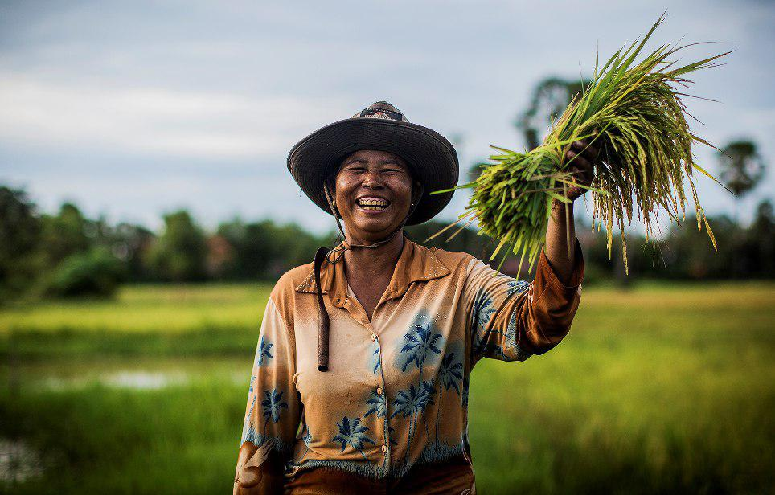
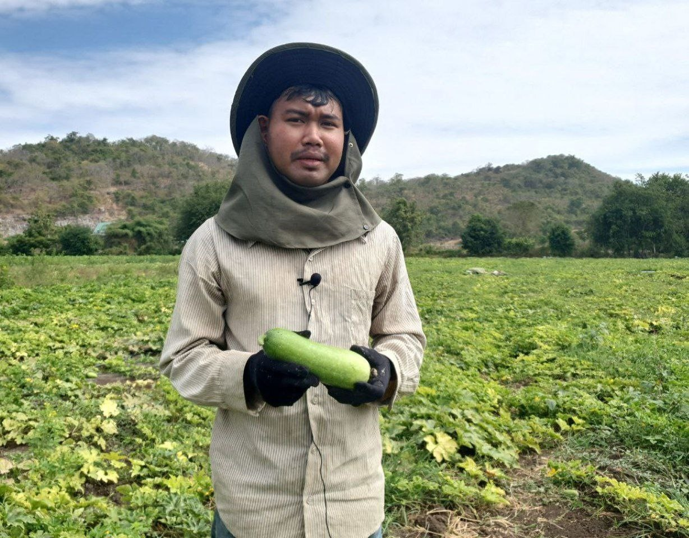
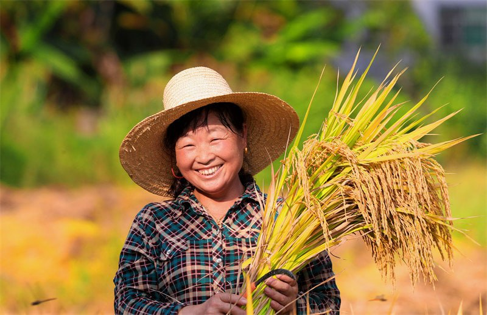
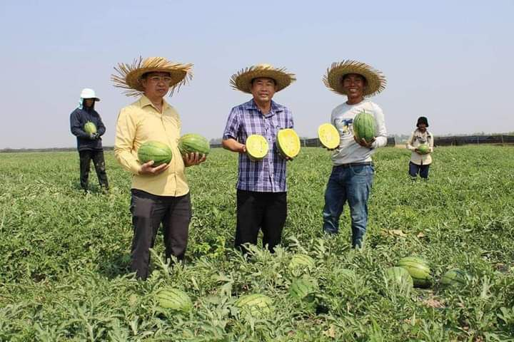
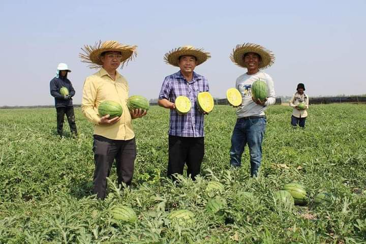
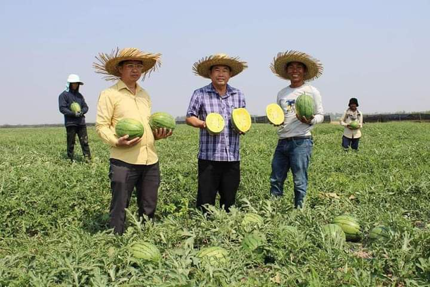
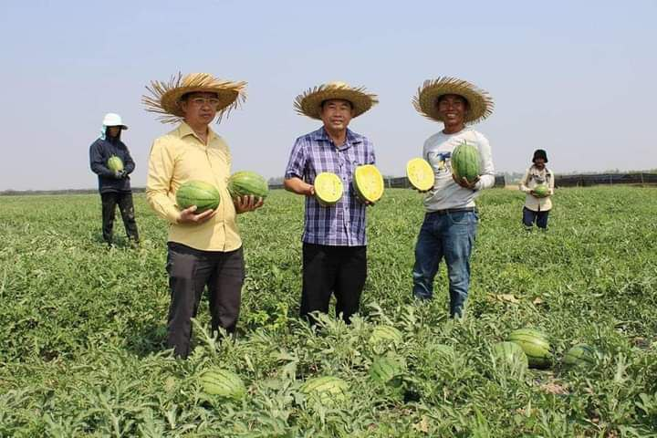

 



ជាប្រទេសមួយដែលពឹងផ្អែកទៅលើកសិកម្មជាសំខាន់ព្រោះប្រជាជនប្រមាណ ៨០% ទៅ ៨៥%ជាកសិករ ហើយកសិកម្មផ្ដល់ ៥០%នៃផលិតផលជាតិសរុប។ ផលិតផលកសិកម្មរួមមានដដំណាំរួមផ្សំ ៦៣% ការចិញ្ចឹមសត្វ ២៤% ការនេសាទ ១០% និង ព្រៃឈើ ៣%។ ដូចនេះបញ្ជាក់ឲ្យឃើញថាប្រជាជន កម្ពុជាមានកម្រិតជីវភាពទាបនូវឡើយ ។
តាមការស្រាវជ្រាវបានឲ្យដឹងថា ចំនួនគ្រួសារដែលប្រកបរបរកសិកម្មមានប្រមាណពី ១.២លាន ទៅ ១.៣លានគ្រួសារនៅទូទាំងប្រទេស។ គេអាចចែកប្រភេទកសិករទាំងនោះជាប្រភេទធំៗដូចតទៅ ៖
ក្នុងវិស័យកសិកម្មកម្ពុជា ស្ត្រីបានដើរតួនាទីសំខាន់ណាស់បន្ថែមលើការងារផ្ទះសំ បែង (ដាំបាយ បុក កិនស្រូវ ដងទឹក រកអុស និងថែទាំកូនចៅ)។ ស្ត្រី ត្រូវដាំដំណាំ ប្រមូលផល មើលថែទាំសត្វពាហនៈ និងត្រូវទៅលក់ផលិតផលនៅឯទីផ្សារទៀតផង។
ប្រព័ន្ធផលិតស្រូវអាចមានលក្ខណះខុសប្លែកគ្នាទៅតាមតំបន់ទីតាំងភូមិសាស្ត្រ របបទឹក រដូវដាំដុះ និងកម្រិតត្រួតពិនិត្យផ្សេងៗ។ ដូចនេះគេអាចចែកប្រព័ន្ធផលិតស្រូវដូចតទៅ ៖
កៅស៊ូមានប្រភពនៅប្រទេសប្រេស៊ីល ហើយនាំចូលមកប្រទេសកម្ពុជាដោយក្រុមហ៊ុនបារាំងកាលពីឆ្នាំ ១៩១០ (១៩២០តាមសៀវភៅសិក្សាគោលសិក្សាសង្គមថ្នាក់ទី៩)ដោយលោក ប៊ូយ៉ា ដាំនៅស្រុកព្រៃនុប ខេត្តកំពត ដែលឥឡូជាខេត្តព្រះសីហនុ។ គេដាំកៅស៊ូនៅតំបន់ដីក្រហមបាសាលដែលសំបូរជីវជាតិដូចជា ខេត្តកំពង់ចាម ត្បូងឃ្មុំ ក្រចេះ រតនះគីរី និង ក្រុងព្រះសីហនុ។ មុនឆ្នាំ ១៩៧០ ចំការកៅស៊ូកម្ពុជាមាន ៦៧០០០ហិចតា ឲ្យផល ៥២០០០តោនក្នុងមួយឆ្នាំ។ សព្វថ្ងៃគេកាប់ដើមកៅស៊ូចាស់ៗចោល និងដាំថ្មីជំនួសវិញ។ ក្នុងឆ្នាំ ១៩៩៩ ផ្ទៃដីចៀរជ័រកៅស៊ូមាន ៣៩៧១៨ហិចតា និងឲ្យផលជ័រស្ងួតបាន ៤៥២០៣តោន ហើយបញ្ចេញលក់ជ័រស្ងួតបាន ៤៤៣៧៦តោន។ ប្រទេសកម្ពុជាមានលទ្ធភាពច្រើនក្នុងការពង្រីកដំណាំកៅស៊ូ ព្រោះប្រទេសយើងមានដីក្រហមរហូតដល់ទៅ ៧១៦០០០ហិចតា។ ដំណាំកៅស៊ូមានសារៈសំខាន់ខ្លាំងក្នុងសេដ្ឋកិច្ចជាតិ ព្រោះដំណាំនេះផ្ដល់នូវរូបធាតុដើមសម្រាប់ឧស្សាហកម្មកៅស៊ូក្នុងស្រុក និងនាំចេញ ហើយផ្តល់ការងារដល់ប្រជាជនយើងបានមួយចំនួនធំ។
ក្នុងឆ្នាំ ១៩៩៩ ក្រៅពីដំណាំស្រូវ និងដំណាំកៅស៊ូ គេឃើញមានដំណាំជាច្រើនទៀតដូចជា ពោត (៥៩៨៣៥ហិចតា) សណ្ដែកសៀង (៣៥០៨៥ហិចតា) សណ្ដែកបាយ (២៦១៨២ហិចតា) ដំឡូងឈើ (១៤០៣៩ហិចតា) ល្ង (១៦៤៦២ហិចតា) សណ្ដែកដី (១០៥៨៧ហិចតា) អំពៅ (៨៤១៧ហិចតា) ថ្នាំជក់ (៨២៩២ហិចតា) ល្ហុងប្រេង (១៥២១ហិចតា) ក្រចៅ (២៧៣ហិចតា) ម្រេច(N/A)...និងបន្លែ (៣១៤៥០ហិចតា)។
នៅប្រទេសកម្ពុជាយើង ការចិញ្ចឹមសត្វទទួលបានផលទាបនូវឡើយ ហើយមានលក្ខណះតូចតាចនៅក្នុងតែរង្វង់គ្រួសារ និងខ្វះបច្ចេកទេស។ ការចិញ្ចឹមសត្វនេះមិនបម្រើឲ្យឧស្សាហកម្ម ឬជំនួញទេ វាបម្រើឲ្យតែការងារកសិកម្មប៉ុណ្ណោះ ព្រោះសព្វថ្ងៃនេះគោ និង ក្របី ៩០% ត្រូវបានគេប្រើប្រាស់ជាកំលាំងអូសទាញ។ ចំពោះសត្វគោវិញគេប្រើវាសំរាប់ព្ជួរ រាស់ដីនៅរដូវវស្សា។ ការចិញ្ចឹមគោទៅអនាគតអាចបម្រើឲ្យឧស្សាហកម្មបាន ព្រោះសព្វថ្ងៃគេបង្កើតស្ថានីយចិញ្ចឹមគោមួយកន្លែងនៅភ្នំតាម៉ៅ ក្នុងខេត្តតាកែវ ដែលមានពូជគោល្អៗជាច្រើន។ ការចិញ្ចឹមសត្វបានរួមចំណែកយ៉ាងសកម្មក្នុងជីវភាពរស់នៅ របស់ប្រជាជនកម្ពុជាយើង។